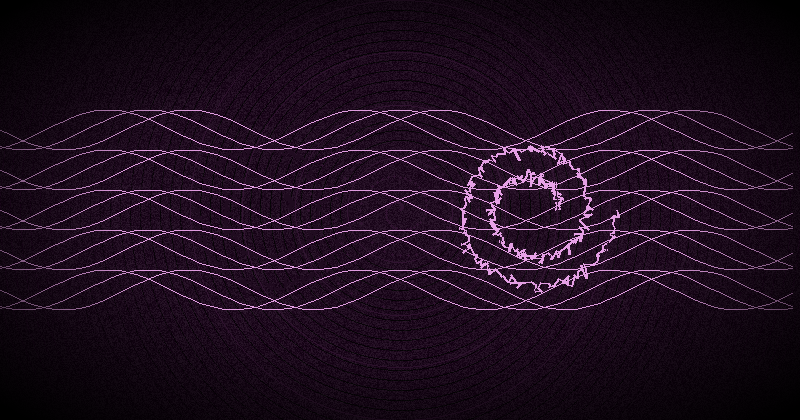

Paradigm Shift & Belief as a Tool: Core Chaos Magick Concepts Explained
What Is a Paradigm Shift?
The term paradigm shift was popularized by the philosopher and physicist Thomas Kuhn in his landmark 1962 work The Structure of Scientific Revolutions. Kuhn argued that science does not progress linearly, accumulating facts one by one. Instead, it moves through revolutionary ruptures — moments when an entire framework of assumptions collapses and is replaced by a new one. The Copernican revolution, the Newtonian synthesis, the Einsteinian relativity — each of these was a paradigm shift in which the very definition of reality changed.
Chaos magick takes Kuhn's insight and applies it to the individual practitioner. If a paradigm is a lens through which we perceive and interpret reality, then shifting that lens is a magical act. The chaos magician recognizes that every belief system — scientific materialism, ceremonial occultism, shamanic animism, pop culture mythology — is a paradigm. None is ultimately true, but all can be useful.
Nothing Is True, Everything Is Permitted
This famous maxim, often attributed to Peter J. Carroll in Liber Null & Psychonaut (and to Hassan-i Sabbah before him), is the philosophical bedrock of belief-as-a-tool. It does not mean that reality is meaningless or that morality is abandoned. It means that no single belief system holds exclusive access to truth. All maps are approximations. All gods are thought-forms. All rituals are psychological technologies.
When you genuinely internalize this, you unlock the ability to adopt any belief deliberately. You can believe in the Olympian spirits for a Goetic working on Tuesday, then shift to a Norse paradigm for a rune divination on Wednesday, then operate from a purely psychological model on Thursday — and each paradigm will produce results because you have lent it the full force of your conviction.
Carroll wrote: "Belief is a tool for achieving results, not a statement about the nature of reality." This single sentence contains the entire magical technology of paradigm shifting.
How to Intentionally Shift Your Paradigm
Shifting a paradigm is not intellectual agreement. You cannot simply decide to believe something and have it be so — the subconscious does not work that way. However, you can engineer the conditions under which a new belief takes root. Here is the process:
- Identify the current paradigm. What beliefs are you operating from right now? Are they serving your magical goals? Journal about your default worldview and its limitations.
- Select a target paradigm. Choose a belief system that is optimal for the operation you intend to perform. Research it thoroughly — its symbols, deities, cosmology, practices, and history.
- Immerse yourself. Read its texts, wear its symbols, decorate your space with its iconography, listen to its music, adopt its postures and gestures. You are building a neural network for the new paradigm.
- Enter gnosis. Use any method — meditation, breathwork, chanting, sensory deprivation, orgasm, exhaustion — to reach an altered state. In that state, the critical faculty is suspended, and suggestions bypass the conscious filter.
- Lock the shift. In gnosis, affirm the truth of the new paradigm with absolute conviction. Visualize yourself operating within it successfully. Feel the reality of it.
- Act as if. For the duration of the working, behave as though the new paradigm is literally true. The subconscious mind cannot distinguish between convincingly acted reality and actual reality. The more consistently you act as if, the deeper the belief embeds.
Examples of Paradigm Shifting in Practice
Ceremonial → Shamanic. Suppose you have been practicing Golden Dawn-style ceremonial magic for years — circles, pentagrams, Enochian calls, planetary hours. You find that your evocations feel mechanical, lacking the raw power they once had. You decide to shift to a shamanic paradigm. You put away the ritual implements. You learn to drum or rattle. You journey to the lower world to meet your power animal. The first time you do this, it feels fake — but after a week of immersion, the drumming takes you to deep trance states, and your results rival anything you achieved with years of ceremonial work.
Shamanic → Pop Culture. A practitioner who has worked with animal spirits for years discovers the pop culture magic movement. They decide to shift to a paradigm where Star Wars archetypes are real thought-forms. They meditate on the Force, create a servitor modeled on a Jedi mentor, and perform workings using lightsaber visualization. The critical mind might dismiss this as childish, but the raw emotional charge of pop culture symbols makes gnosis easier and faster than ever before.
Polytheistic → Atheistic-Psychological. After years of offering to gods and spirits, a magician experiments with a purely psychological model. All rituals are reframed as operations on the subconscious. Deities become archetypes of the collective unconscious. This paradigm has the advantage of bypassing any theological resistance and can be particularly effective for practitioners with a scientific background.
The key insight: each paradigm works. The results do not depend on which one is "true" but on the depth of your immersion and the intensity of your gnosis within it.
Neuroplasticity and Why Paradigm Shifting Works
Modern neuroscience confirms what chaos magicians have known for decades: the brain is not a fixed structure but a plastic organ that rewires itself in response to repeated experience. This is neuroplasticity. Every time you think a thought, perform a ritual, or hold a belief, you strengthen specific neural pathways and weaken others.
When you adopt a new paradigm, you are literally growing new neural connections. The old pathways — the default paradigm — are still there, but they become the unused trails in a forest while the new paradigm becomes the well-trodden highway. With enough repetition, the new paradigm becomes the path of least resistance for your mind.
This explains why immersion is so critical. Reading about a paradigm once does nothing. But surrounding yourself with its symbols, sounds, and practices for days or weeks literally changes your brain's physical structure. The paradigm ceases to be an intellectual idea and becomes a felt reality.
Neuroplasticity also explains why returning to a previous paradigm after shifting is possible. The old neural pathways do not disappear — they remain, overgrown but accessible. The chaos magician can become a virtuoso of paradigm switching, accessing multiple belief systems the way a musician accesses multiple keys.
Belief, Gnosis, and Results: The Triad
These three elements form the core engine of chaos magick. Understanding their relationship is essential for effective paradigm shifting:
- Belief provides the framework. It defines what is possible within the paradigm. If you genuinely believe that a sigil charged with sexual energy is more powerful than one charged with meditation, that belief itself shapes the outcome.
- Gnosis provides the energy. It is the altered state in which the critical faculty is suspended. Without gnosis, belief remains intellectual and powerless. With gnosis, belief becomes imprinted directly into the subconscious where it can manifest.
- Results provide the feedback. A successful outcome reinforces the belief, which makes the next gnosis state easier to achieve, which produces stronger results. This positive feedback loop is what makes experienced magicians more effective than beginners.
The practical takeaway: do not attempt to shift a paradigm through willpower alone. Use gnosis as the catalyst. The most effective paradigm shifts occur in altered states — which is why chaos magick places such heavy emphasis on gnosis techniques.
Exercises for Developing Belief-Shifting Skills
Exercise 1: The One-Week Paradigm Immersion
Choose a paradigm significantly different from your current one. Commit to living within it for seven days. Read its core texts each morning. Wear its symbols. Perform its basic rituals. Speak in ways consistent with its worldview. At the end of the week, journal about what shifted. Even if you do not fully adopt the paradigm, you will have developed the muscle of shifting.
Exercise 2: The Pop Culture Thought-Form
Select a fictional character from a movie, game, or book. Treat them as a real entity for one working. Address them by name, make offerings (a screenshot, a piece of media), and request their assistance in a small matter. Observe the results. This exercise reveals how quickly the subconscious accepts the reality of a paradigm when the emotional charge is high.
Exercise 3: The Double-Slit Experiment with Belief
Perform the same magical operation — a simple sigil for a trivial outcome — using two different paradigms on separate occasions. For example, charge one sigil using ceremonial Enochian calls and another using shamanic drumming. Compare the results. This teaches you which paradigms are most effective for your personal psychology.
Exercise 4: Gnosis State Anchoring
Develop the ability to enter a light gnosis state on command using a trigger — a specific breathing pattern, a posture, a sound. Once anchored, use that trigger to lock in paradigm shifts. The faster you can access gnosis, the faster you can shift paradigms.
Common Resistance and How to Overcome It
"This feels fake." Of course it does. Every new paradigm feels fake until it becomes familiar. The feeling of falseness is simply the resistance of old neural pathways. Stay with it. The discomfort usually peaks around day three of immersion and then begins to subside.
"I feel like I'm betraying my tradition." This is the most common resistance among practitioners who have deep roots in one system. The solution is reframing: you are not betraying anything. You are adding tools to your kit. Your original tradition remains available when it is the best tool for the job.
"What if I get stuck in a paradigm?" This fear reflects a misunderstanding of paradigm shifting. You are not trapped — you are experimenting. The act of deliberately adopting a paradigm includes the intention to release it. The chaos magician knows that all paradigms are temporary vessels.
"I'm too rational for this." Rationality is itself a paradigm. The scientific materialist worldview is a powerful tool for some operations but a hindrance for others. When you treat rationality as one tool among many rather than the only valid lens, you unlock its power without being limited by it.
How Paradigm Shifting Makes Other Magick More Effective
Paradigm shifting is not a standalone practice — it is a meta-skill that amplifies everything else. Here is how:
- Sigil magick: By shifting into a paradigm where symbols are inherently powerful (e.g., runic or Kabbalistic), your sigils carry more charge because you believe in their innate power.
- Servitor creation: Shifting to an animistic paradigm where thoughts are real beings makes it easier to give your servitors autonomy and life.
- Evocation: Shifting to a Goetic paradigm with its full ceremonial apparatus produces more vivid and effective evocations because you are not fighting your own disbelief.
- Divination: Shifting to a paradigm where the oracle (tarot, runes, I Ching) is a living intelligence makes readings more accurate and insightful.
- Gnosis work: The very act of shifting is a gnosis exercise. Each time you shift, you strengthen your ability to enter altered states.
The master chaos magician is not someone who has mastered one system but someone who can choose the right system for the moment and shift into it with fluid grace.
Applied Techniques: The Flash Paradigm Shift
Once you are comfortable with slower, immersion-based shifts, you can work toward the flash paradigm shift — the ability to adopt a new paradigm in moments. This is the advanced level. Here is a technique:
- Identify a paradigm you have already deeply explored (months of immersion).
- Create a single symbol that encapsulates the entire paradigm for you.
- Enter gnosis. In that state, present the symbol to yourself with full sensory intensity.
- In the same gnosis state, perform a working within that paradigm.
- Practice until the symbol alone triggers the paradigm state.
With enough practice, you can carry a dozen paradigms as compressed symbols and access any of them in seconds. This is the ultimate expression of belief as a tool.
Put paradigm shifting into practice.
Generate cryptographic sigils, create servitors, and explore multiple magical paradigms with the premium Chaos Sigil Generator — combines six ancient alphabets, planetary kameas, and the flash ritual in one offline app.
Get the Chaos Sigil Generator →Try It Free Online
Experience paradigm shifting through digital sigilization. The free online tools let you experiment with different alphabets and magical systems without commitment.
Try the Free Online Sigil Generator →
The Philosophical Foundation: Why This Matters
The belief-as-a-tool paradigm is not just a technique — it is a complete philosophical stance toward reality. It aligns with postmodernist thought, which recognizes that all knowledge is constructed, all narratives are contingent, and all truth claims are acts of power. Chaos magick applies this insight practically: if reality is constructed through belief, then changing your belief changes your reality.
This is not idealism in the naive sense (believing something does not make it physically true in all cases). It is pragmatic constructivism: the belief system you operate from determines what experiences are available to you, what energies you can access, and what results are possible. A Christian mystic and a Buddhist monk and a chaos magician can all have genuine spiritual experiences — but the content of those experiences will be shaped by their respective paradigms.
The goal of paradigm shifting is not to find the "true" paradigm. It is to gain fluency in multiple paradigms so that you can choose the most effective lens for each magical operation.
References
- Carroll, P.J. (1987). Liber Null & Psychonaut. York Beach, ME: Samuel Weiser.
- Wilson, R.A. (1977). Prometheus Rising. Tempe, AZ: New Falcon Publications.
- Kuhn, T.S. (1962). The Structure of Scientific Revolutions. Chicago: University of Chicago Press.
- Hine, P. (2013). Condensed Chaos: An Introduction to Chaos Magic. Tempe, AZ: New Falcon Publications.
- Spare, A.O. (1913). The Book of Pleasure (Self-Love): The Psychology of Ecstasy. London.
- Doidge, N. (2007). The Brain That Changes Itself: Stories of Personal Triumph from the Frontiers of Brain Science. New York: Viking.
- Sherwin, R. (2018). "Belief as a magical tool: Neuroplasticity and paradigm shifting." Chaos International, 31, 12-29.
- Foucault, M. (1969). The Archaeology of Knowledge. Paris: Gallimard.